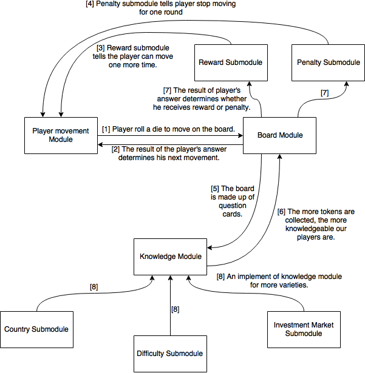

| Abstract modules |
Functions |
Message flow between modules |
| Playermovement Module |
It tracks the use of die and players’ movement. |
- Players roll a die to move on the board.
- The result from the board module will determine player’s next movement.
- Reward submodule tells the player to move one more time.
- Penalty submodule tells player to stop moving for one round.
- The board module is based on knowledge module, as the “fun-shaped” board is made up of question cards.
- The more tokens that are collected, the more knowledge our players are!
- The result of player’s answer determines whether he receives reward or penalty.
- These three submodules are implements of knowledge module for more varieties, which we may apply in the future. (shown in product family as well)
|
| Board Module |
The board is made up of question cards. When players land on cards of different colors, they need to answer the question on the card. |
| Reward Submodule |
If player answers the question correctly, he can collect token from the square if there is one. |
| Penalty Submodule |
If player answers the question wrongly, he will lose one chance of rolling die. |
| Knowledge Module |
Knowledge module controls all the cards. We need a system to check the players’ answers whether they are correct. |
| Country Submodule |
The question cards are firstly about Singapore property market. We can add other countries’ in the future as well. |
| Difficulty Submodule |
The question cards can be divided into different difficulty levels. |
| Subject Submodule |
In the future we may expand the topic of question cards from Singapore property market to investment market. Other possible topics include How to start a family
|

{kind=link}